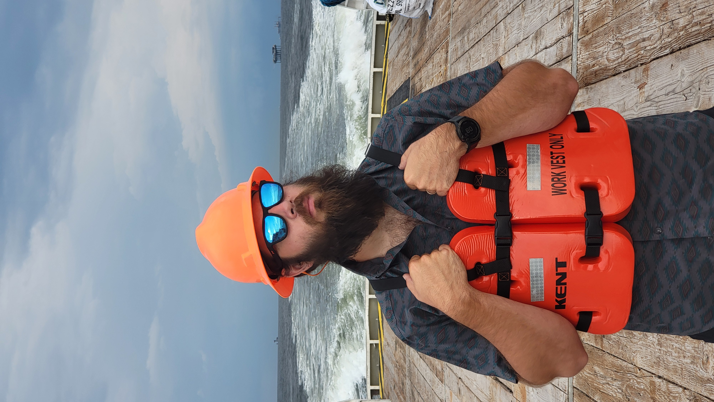
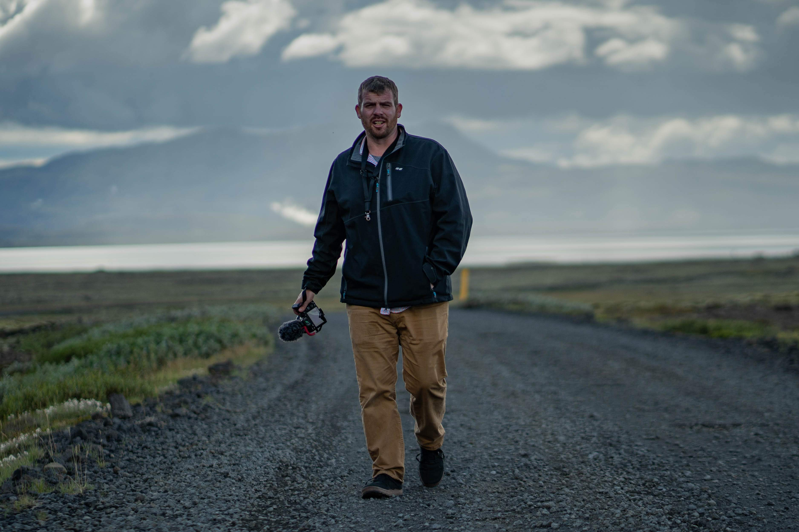
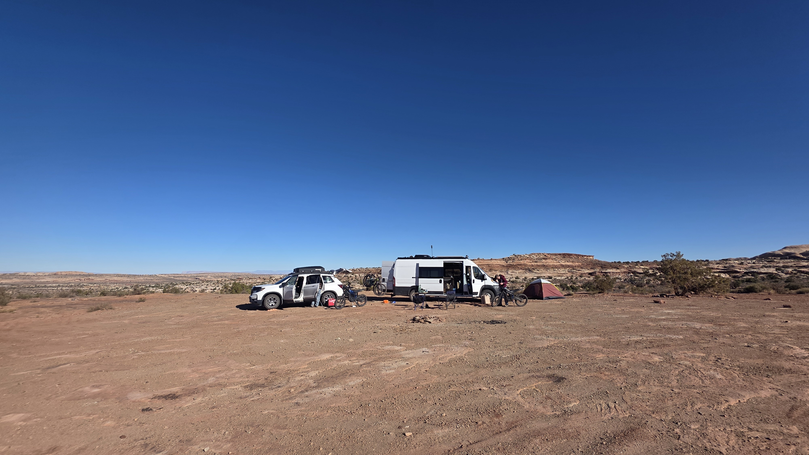
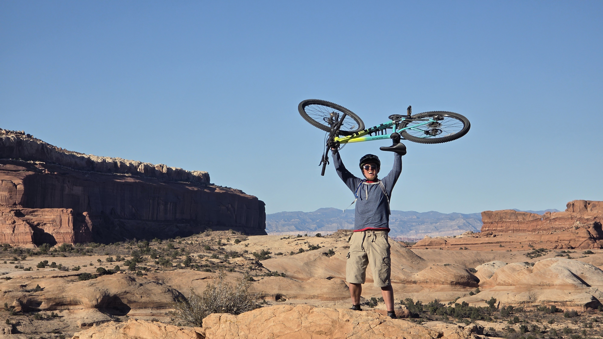

Paul Nurkkala "Nurk"
2018 DRL Allianz World Drone Racing Champion and Emmy-winning FPV creator. Builds, races, and films drones for a living — the YouTube channel is a go-to for FPV racing, cinematic work, and DIY hardware projects.

A week of mountain biking, electric dirt biking, and hiking out of a dispersed basecamp on Forest Road 525. Thirty-nine pins. Drive times from camp on every one. Satellite view. Click anything.
Mid-to-late October is the sweet spot. Days in the upper 60s to upper 70s, nights drop to mid-40s, with monsoon season fully done and winter chill not yet arrived.
October in Sedona averages a high of 67.1°F and a low of 44.6°F, with only about 5 days of rain totaling roughly half an inch (weather-atlas data). The first half of the month still runs slightly warmer (occasional 80s) — the back half cools off enough for solid sleep in the rigs without overheating.
Get to camp Sunday through Tuesday. Spring and fall are Sedona's busy seasons — sites on FR 525 fill by Friday afternoon. Trailheads should be hit at sunrise.
Free dispersed camping on Coconino National Forest land, 10 miles SW of Sedona, central to almost everything.
Loy Butte Rd / FR 525 has five designated dispersed camping areas: Surprise, Windmill, Cockscomb, Greasy Spoon, and Nolan. Nolan is the largest at ~12 acres — aim for it with the Promaster and F250. Graded dirt road, accessible for both rigs without 4WD. Coconino NF info →
No water, no toilets, no services. Showers in Cottonwood (20 min SW). Cell service is spotty — download Trailforks and onX Offroad for offline use.

2018 DRL Allianz World Drone Racing Champion and Emmy-winning FPV creator. Builds, races, and films drones for a living — the YouTube channel is a go-to for FPV racing, cinematic work, and DIY hardware projects.

Photographer, cinematographer, and FPV drone pilot — Part 107 since 2017, flying FPV since 2015. Shoots events, sports, and branded content as a one-man visual storytelling shop, equally at home on the ground or behind the sticks.


Crew member who lifts bikes over his head on slickrock for the photo and means it. Lives for big desert days on the MTB.

Sedona is intermediate-to-expert country — the world's most photogenic slickrock with serious tech. Click any trail below to see it on the map.
Stop at Thunder Mountain Bikes on day 1 for current trail beta. Full Sedona MTB guide at Two Wheeled Wanderer and the Trailforks Sedona region.
Important: Sur-Ron / Talaria-class e-dirt bikes are NOT classified as e-bikes in Coconino NF. They're treated as OHV / motorized vehicles.
Per Thunder Mountain Bikes' official guidance: "eBikes are not permitted on ANY singletrack trails within the Coconino National Forest Red Rock District." High-power throttle machines fall even more strictly into the OHV bucket. They are not street legal without registration — so you'll need to trailer them to OHV trailheads.
Full route list at Coconino NF — Sedona OHV Routes. 15 mph speed limit, helmets required.
Click any hike to see it on the map.
A Red Rock Pass is required at most trailheads ($5/day, $15/week). America the Beautiful pass also works. Full hiking list at AllTrails Sedona.
A running record of things we've researched about the area. Newest entries at the top.
Two strong picks, both now on the map as hike pins:
Skipped: Sterling Pass / Vultee Arch (forest grind, not slot character), Wilson Canyon (too flat), Munds Mountain (faint trail + needs HC vehicle to even get to it), Casner Mountain (~22-permit annual lottery, not realistically accessible), full-length Long Canyon (duplicates existing flat hikes).
Honest gap: "True" technical slots in the area (Sycamore, Robbers Roost, Soldier Pass tech route) are canyoneering with rope and swim sections — out of scope for a hiking trip without that gear and training.
Five candidates that match the brief, in rough priority order:
Things I'm not suggesting (they violate the brief): Pink Jeep tours, vortex tours, hot-air balloons, Slide Rock for actual swimming in Oct, and all the Ancestral Puebloan sites (Honanki, Palatki, Montezuma's Castle — interesting but they're history).
Verdict: very low. October is one of the best months for bug avoidance in Sedona — dry climate, cool nights, monsoon long over. Most pressure is from the standard desert critters (scorpions, snakes) rather than biting insects.
Net: bring DEET only as a precaution, not a daily ritual. Reflexive desert habits matter more than bug spray.
Four Oct-friendly options inside ~1.5 hr drive of basecamp:
Already on the map: Slide Rock State Park. By Oct 15 Oak Creek is ~55–65°F — photo stop and wading only, not real swimming.
Skip: Cibecue Falls (3+ hr, swimming prohibited), Salt River tubing (season closed), Lake Powell / Havasupai (out of range).
Honest answer: Sedona doesn't really have one. Every named shuttle line in town (Thunder Mountain Express, Highline) is Black/expert with cliff exposure. The closest Blue substitutes:
Expect short pedaly bits between the descending sections — neither is a sustained gravity run. Aerie/Cockscomb from basecamp is the closest "cruise without consequences" option that's already adjacent to camp, but it's not a true shuttle.
Because they were — the original data reused four placeholder YouTube IDs across 25+ pins. Fixed by nulling all duplicated placeholders, then having a background agent find verified per-trail POV videos for every pin it could.
Result: 30 of 35 pins now have a trail-specific video that's been confirmed to exist. Five pins have no video (Basecamp, Thunder Mountain Bikes, Western Civilization, Sycamore Pass, Last Frontier) — for the latter three, no trail-specific YouTube footage surfaced and we'd rather show nothing than something misleading.